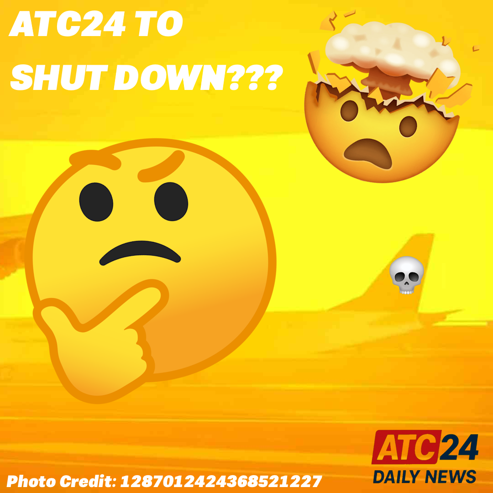

🚨 BREAKING: ATC24 Shutting Down? 😭
[July 3, 2025: ATC24 Newsroom]
🤯 ATC24 is set to temporarily shut down for approximately a few hours to test some stuff, including the anticipated Official Radar Client!
Here is Lead Server Manager MJ's statement as a response to ATC24 Daily News Reporter coolboy2010ty:
"This is a necessary shut down in order to smoothen the introduction of 3 large features all at the same time. This shut-down cannot be avoided using a sequential roll-out of the 3 indvidual features one by one as they are very integrated and rely on each other to fully function"
- MJ, July 3 7:07 PM EST
❓ We expect the downtime to be a sad and depressing time for ATC24 Players, and as such, we will be on the site of the commotion of these sad gamers, getting interviews from them.
🤔 Along with the radar client, the downtime will allow for testing of two other features, one of which we speculate to be the bot update covered in a previous post.
Once again, ATC24 will be down on July 12, 2025 8:30 PM (for a maximum of FOUR HOURS!), and this downtime date also confirms that the client is not expected to release in the next week.
👋 We will be on the site as we cover the downtime as it goes on, so whether you want to say hi to ATC24 Daily News, or want to cover what you think of the situation, we will be there, and after the downtime, we will post your reactions to the downtime in news-stories and our Instagram (@atc24_dailynews). 📸
We thank you for your patience as we cover the events leading up to and during the downtime, thank you for choosing ATC24 Daily News for your news recap on ATC24. 😄
Source: ATC 24 chat
Author: coolboy2010ty